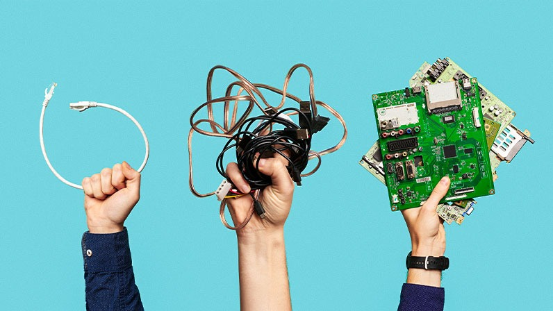

97% do lixo eletrônico da America latina nao é decartado de forma sustentavel e isso é um grande problema. O descarte incorreto de E-lixos impacta a saúde pública devido aos metais pesados, gera danos ao meio ambiente através da contaminação de solos, lençóis freáticos e os organismos da fauna e da flora e, além disso, reduz o tempo de vida dos aterros sanitários.
Benefícios da reciclagem do lixo eletronico

Existem grandes benefícos no descarte correto do lixo eletronico, entre eles esta;
Conservação da água e do solo,os eletrônicos quando descartados em locais inadequados podem liberar substâncias tóxicas na água, no solo e no ar.
Impulso à economia, por meio da logística reversa. A reciclagem do resíduo eletrônico pode e deve ser explorada, em todas as suas possibilidades, como uma forma sustentável de movimentar a economia.
Reutilização de metais preciosos.Segundo o relatório divulgado pelo Instituto das Nações Unidas para Treinamento e Pesquisa, o lixo eletrônico gerado em 2019, continha 7 mil quilos de ouro em toda a América Latina. , com o descarte correto grande parte desse ouro pode voltar a circular. Além disso, alguns metais podem ser reutilizados por meio da logística reversa de eletroeletrônicos.